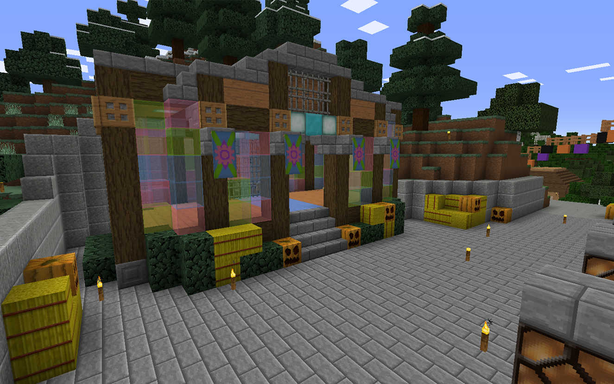

For best viewing experience, we recommend maximizing your browser window.

We Are Back
Posted on November 10, 2016 by JMCNation
Welcome back everyone! You may have been asking where we have been the past month and a half. Today we are going to answer this and look forward to what is coming next for the server.
"Where have you been?" is an excellent question and to answer it I have been busy with life. Have not had time to post Featued information and along with this there was nothing to talk about. We have been busy though and now have content available for everyone to play with.
We have released 1.1.6 and 1.1.6.1 to the server. Both updates were full of content and fixes. 1.1.6 was the first phase of releasing Night Fall and in the near future 1.7 will release the bulk of the content.
Minecraft 1.11 is going to be coming out soon and we will be aiming to get the server compatible with it as soon as it come out so that you can keep playing.
We are aiming to release more content more often and thank everyone ofr being patient with us during these past few months. Many more things to do and see await you. For now enjoy 1.1.6 and we will see you next week.
Notice:
-Minecraft 1.11 pre-release is the current experimental version. This means that if you are using any of the snapshots or pre-releases for 1.11 when trying to connect to the server you will error out. Make sure you are in a version of 1.10 when on server.
You can get more information about new snapshots and pre-releases on the Mojang website.